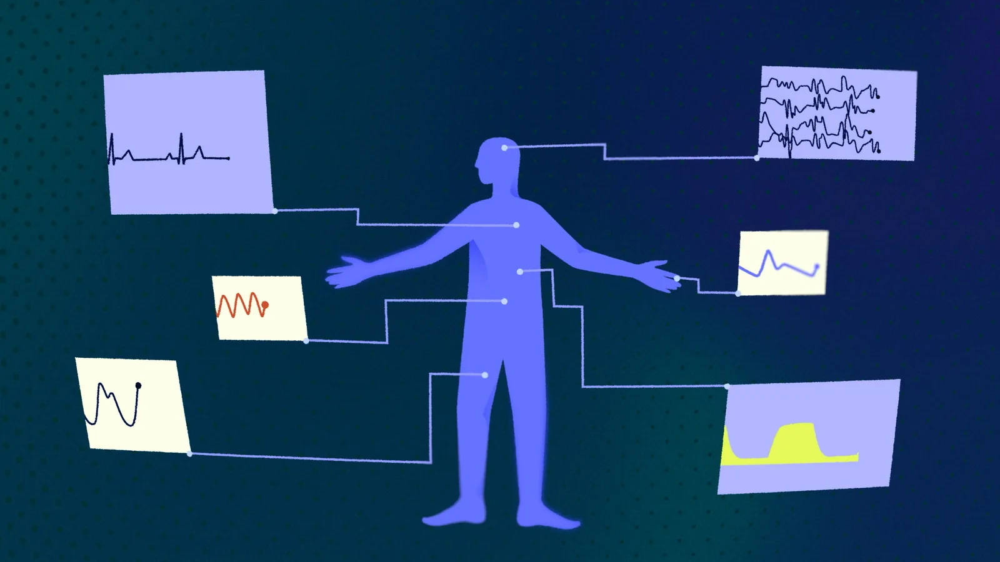
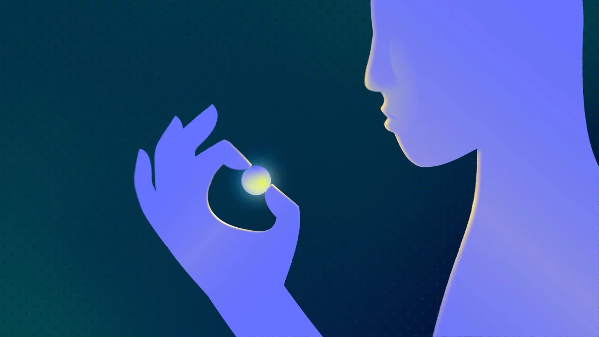
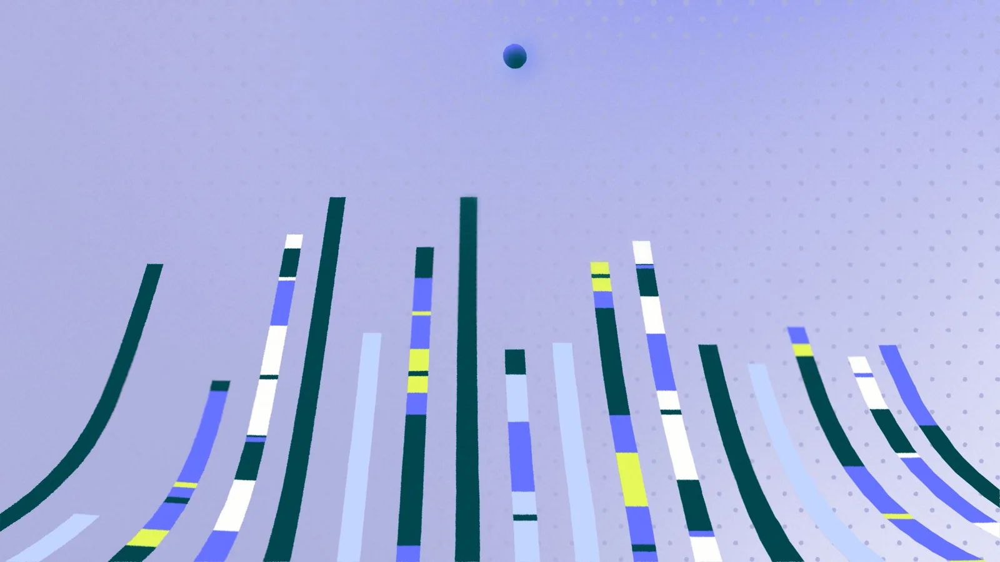
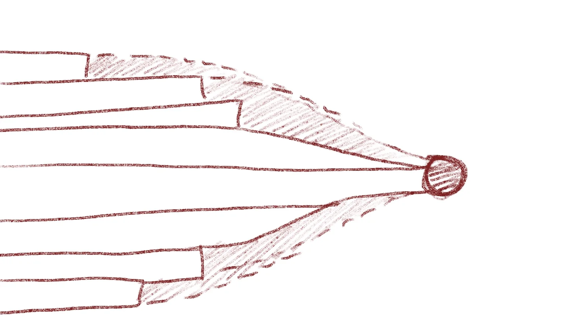
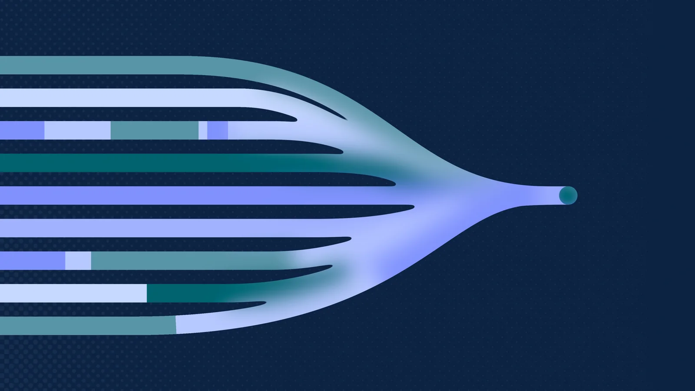
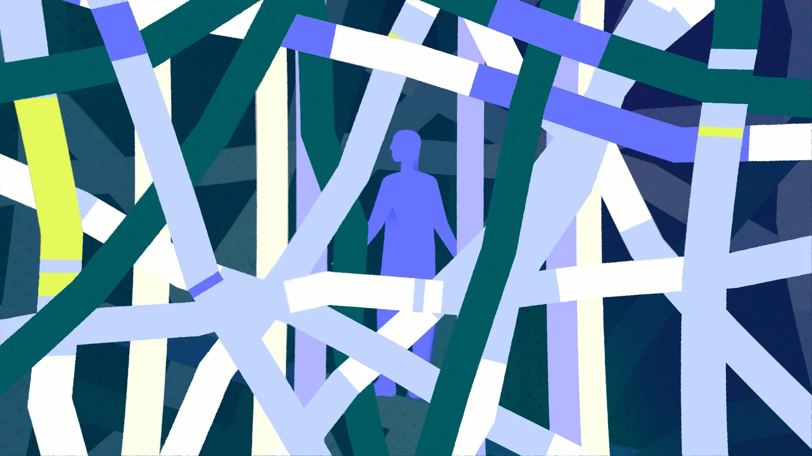
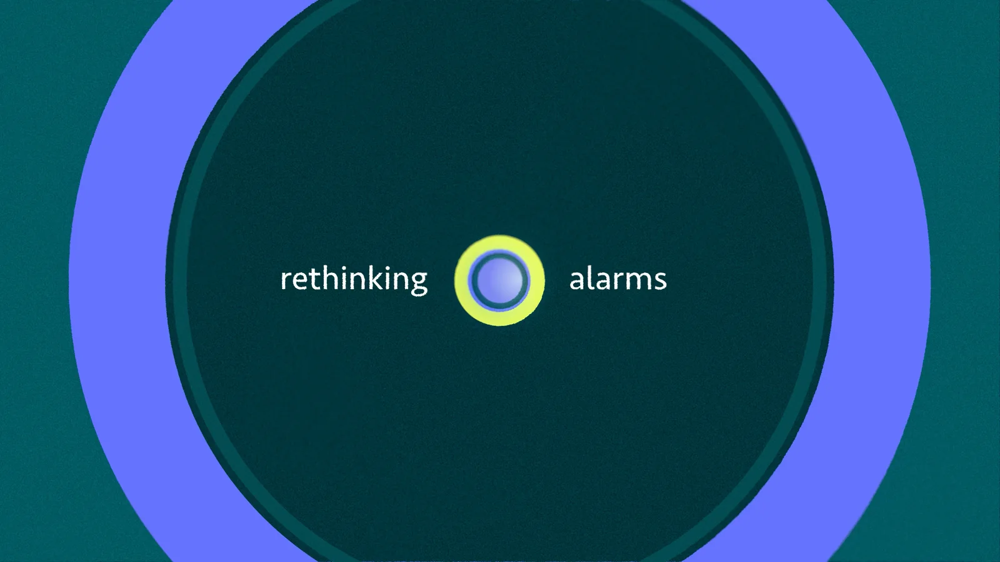
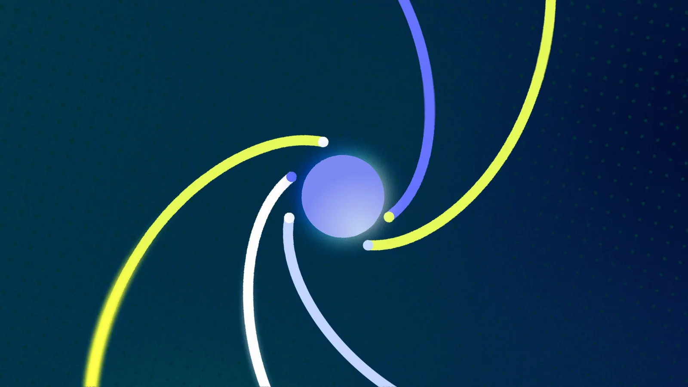
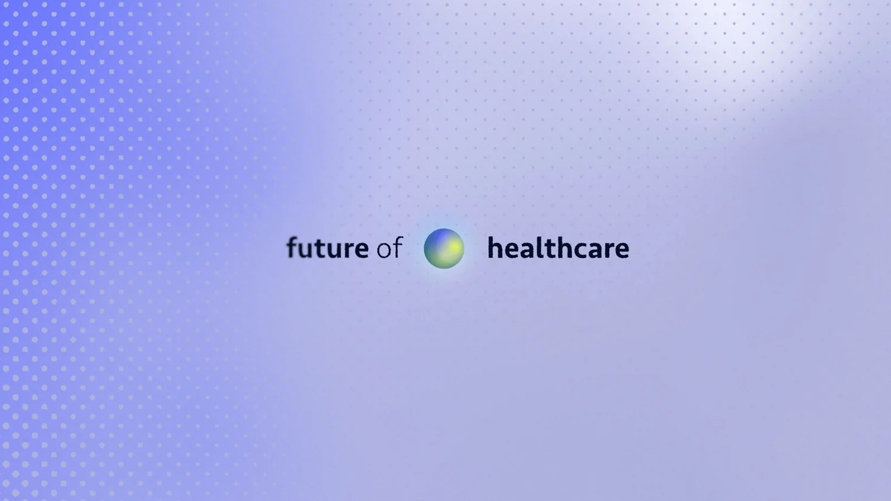

SAS-ICU
Een brug tussen wetenschappelijk onderzoek en de praktijk.
Voor SAS-ICU verzorgden we het hele traject: onderzoek, script, vormgeving, illustratie en animatie.
We ontwikkelden een eigen beeldtaal van abstracte vormen, rijke texturen en vloeiende animatie. Daarmee maken we het onderzoek begrijpelijk én geven we de film een uitgesproken visueel karakter.
De uitdaging
De uitdaging was om complex, breed wetenschappelijk onderzoek te vertalen naar een behapbaar en concreet verhaal. Daarbij sloegen we een brug tussen wetenschap en werkveld door jargon om te zetten in gangbaar taalgebruik en zo de toegankelijkheid te vergroten.
Het doel was om het onderzoek inspirerend te presenteren en de urgentie ervan duidelijk te maken. Zo kon er draagvlak voor het project ontstaan, wat de kans op succes vergrootte.



Ons inzicht
Het onderzoek krijgt pas impact wanneer complexe kennis niet alleen begrijpelijk wordt, maar ook duidelijk maakt waarom die ertoe doet en hoe ze in de praktijk kan worden toegepast. Dit maakt het verhaal completer en geeft context aan het geheel.
Onze keuzes
We vertalen de wetenschappelijke inhoud naar eenvoudige vormen en herkenbare visuele verbanden. Lijnen verbeelden informatiestromen; in animatie laten we zien hoe die samenkomen.
Textuur, licht en kleur geven die abstracte wereld diepte en karakter. De animatie brengt ritme aan en leidt de kijker door het verhaal: van probleem naar oplossing en conclusie.
Het maakproces
Van schets naar animatie.


Finale styleframes




Het resultaat
Een duidelijk en inspirerend verhaal waarmee de onderzoeksgroep andere partijen kan benaderen om draagvlak voor het project te creëren. Een brug tussen wetenschappelijk onderzoek en toepassing in de praktijk.
De video kan ingezet worden voor pitches en presentaties op congressen en in zakelijke sfeer, maar ook op de werkvloer bij medisch specialisten en zorgverleners om ze kennis te laten maken met het project.
Het eindresultaat